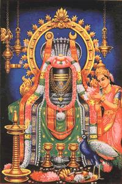
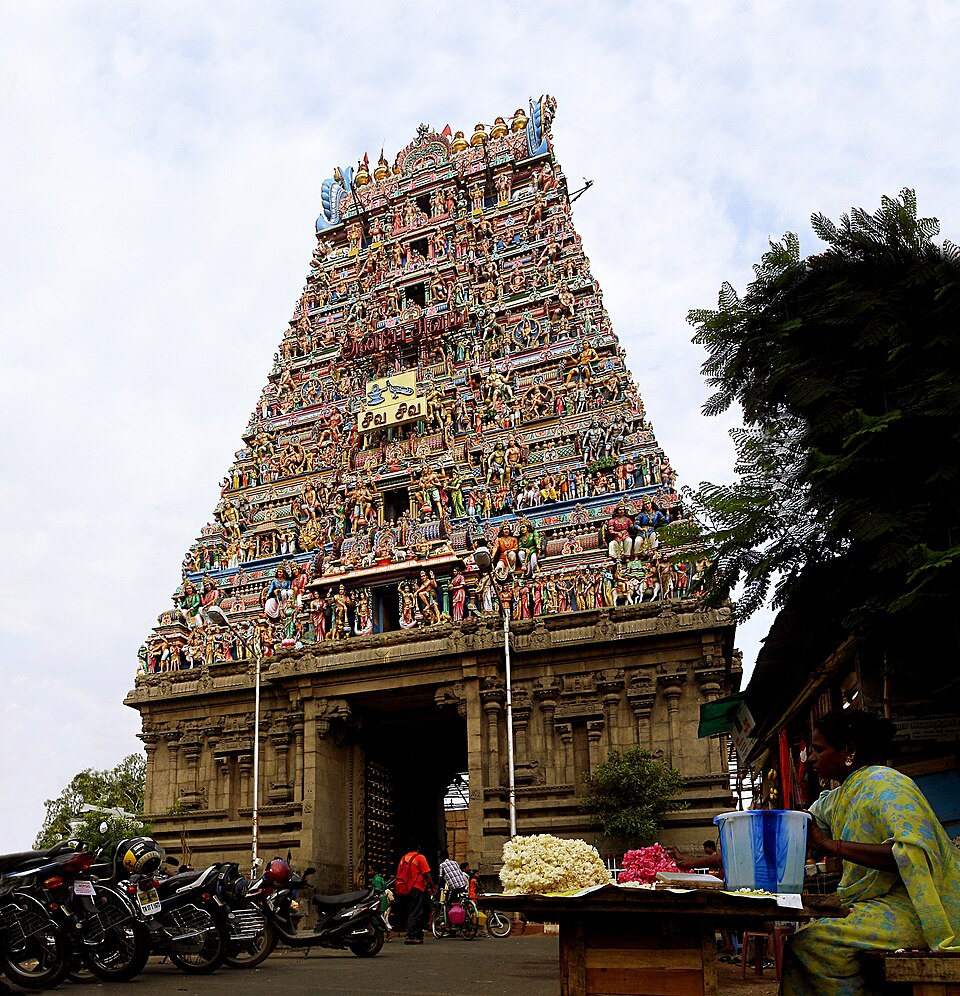
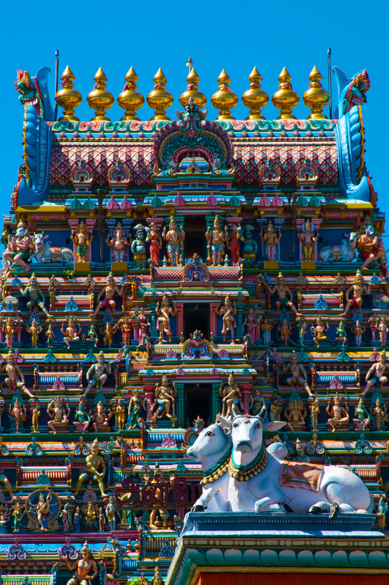

Kapaleeshwarar Temple , Mylapore
Kapaleeshwarar Temple – The Spiritual Heartbeat of Mylapore and Shaiva Devotion
Overview
The Kapaleeshwarar Temple in Mylapore, Chennai, Tamil Nadu, India, is one of the most illustrious and spiritually vibrant temples of the Shaivite tradition in southern India, attracting thousands of devotees and visitors every year. Dedicated primarily to Lord Shiva worshipped here as Kapaleeshwarar, the temple also reveres his consort Goddess Karpagambal (Parvati) with equal devotion, and the complex is dotted with beautiful shrines, intricately carved mandapams (pillared halls), and symbolic sculptures that reflect centuries of continuous worship, artistic evolution, and cultural heritage. The temple’s presence forms the heart of Mylapore — one of Chennai’s oldest neighbourhoods — and stands today as a living testament to the syncretic blend of religion, community, and historical continuity that defines traditional Dravidian temple life. Its sacred tank, towering gopurams, and daily rhythms of ritual make it a centre not just of belief but of cultural identity for devotees across generations.
Sthala Purana (Legend and Spiritual Narrative)
The Sthala Purana (local sacred legend) of this temple tells a fascinating and deeply symbolic tale that gives meaning to both the temple and the city surrounding it. According to traditional lore, Goddess Parvati once took the form of a peahen (mayil in Tamil) to worship Lord Shiva here, seeking to regain her divine form after a curse — an act of humility and devotion so pure that it sanctified the very land, leading to the name Mylapore (“land of peacocks”) as the area developed around the shrine. Another celebrated myth associated with the temple involves Lord Shiva’s fierce anger towards Lord Brahma, after Brahma failed to show proper respect; Shiva is said to have snapped off one of Brahma’s heads (kapalam), and in penance Brahma worshipped Shiva here, giving another layer of meaning to the name Kapaleeshwarar. The Tevaram hymns of the Nayanars — particularly Thirugnanasambandar — sing praises of the deity, further reinforcing the temple’s status as a Paadal Petra Sthalam (one of the holiest Shiva temples sung in canonical Tamil devotional poetry).
Moolavar and Temple Deities
At the heart of the temple is the Shiva lingam, worshipped as Kapaleeshwarar, set within the central sanctum (garbhagriha), where devotees offer their prayers and receive blessings of divine grace. Alongside him is the shrine of Goddess Karpagambal, revered as a wish‑granting mother figure whose compassion and presence draw worshippers seeking protection, prosperity, and emotional solace. Beyond the principal deities, the temple complex also houses shrines to other important divine figures such as Lord Murugan (Singaravelan), Lord Ganesha in his dancing form (Narthana Vinayaka), and representations of the 63 Shaivite saints (Nayanmars) whose life stories and songs are integral to Tamil Shaiva tradition. The presence of these multiple shrines within a single complex reflects the temple’s role as a comprehensive spiritual hub that sustains various strands of devotional focus within the Shaivite fold.
Peacock Legends and Temple Origins
One of the most unique aspects of the Kapaleeshwarar Temple is its deep connection with the peacock (mayil in Tamil) symbolism, which is rarely seen as a central myth in other Shaiva temples. According to legend, Goddess Parvati once worshipped Lord Shiva here in the form of a peahen to regain her divine form after a curse, an act demonstrating humility, devotion, and the transformative power of grace. This myth is so central to the temple’s identity that the neighbourhood of Mylapore itself derives its name from the peacock, linking the temple’s spiritual legacy with the city’s historical and cultural identity. Inside the temple, representations of peacocks and peahens in sculptures, reliefs, and even ritual motifs commemorate this story, creating a visual narrative that is unique in both architectural symbolism and devotional practice. Unlike most Shiva temples, where animal symbolism exists but rarely dominates, here the peacock’s sacred association with Parvati worship is celebrated in daily rituals, festival decorations, and the temple’s very spatial organization, making it a singular feature of Kapaleeshwarar’s mythic and devotional heritage.
The Temple Tank and Theppa Festival: A Living Ritual
Another distinguishing feature is the Kapaleeshwarar Temple Tank, a large sacred water body situated west of the main shrine, which is not just decorative but central to the temple’s ritual life. During the Theppa Thiruvizha (Float Festival), the deity is placed on a beautifully decorated raft that floats on the tank, a spectacle unmatched in most Shiva temples in urban settings. The tank itself, historically linked to sacred purification and community gathering, allows devotees to perform ritual baths (theertham snanam) that are believed to wash away sins and fulfill wishes. What makes it especially unique is the integration of water‑based processions into daily festival life, blending sacred mythology, visual theatre, and community participation in a way that transforms the temple precincts into a living stage for devotion. The tank, combined with the temple’s rituals and mythic associations, exemplifies how Kapaleeshwarar Temple uniquely merges spiritual, cultural, and ecological symbolism, making it a truly singular place of worship in the Shaiva tradition.
Temple Timings and Rituals
The temple welcomes devotees daily with a structured schedule of worship: it typically opens in the early morning from around 5 :30 AM and remains accessible until midday around 12 :30 PM, before reopening in the late afternoon around 4 :00 PM and continuing until about 9 :00 – 9 :30 PM in the evening, though timings are sometimes extended during festivals and special occasions. Within these hours, the temple follows six daily Agama rituals, beginning at dawn and continuing through traditional poojas such as Kala Sandhi, Uchikala, Sayaraksha, and Ardhajama. These rituals include elaborate sequence of abhishekam (sacred bathing of the lingam), alankaram (decoration), naivedyam (food offerings), and deepa aradhanai (sacred lamps), accompanied by Vedic chanting and instruments, creating an immersive rhythm of devotion that marks the temple’s spiritual heartbeat throughout the day.
Morning: 5:00 AM – 12:30 PM
Evening: 4:00 PM – 10:00 PM
Festivals
The Kapaleeshwarar Temple’s festival calendar is among the most colourful and spirited in the region, with the Panguni Peruvizha (Brahmotsavam) during the Tamil month of Panguni (March–April) being its most celebrated event. This nine‑to‑ten‑day festival begins with a ceremonial flag hoisting (dhvajarohanam) and includes the famous Arubathimoovar festival, where the temple’s idols — accompanied by the 63 Nayanmar saints — are placed on beautifully decorated chariots and taken in grand processions through the streets of Mylapore amidst music, chanting, and crowds of devotees. Other festivals include the Theppa (Float) Festival in Thai, where deities are carried on a raft across the temple tank to the sound of hymns, and occasions like Navaratri, Karthigai Deepam, Panguni Uthiram, and Maha Shivaratri, all of which see special decorations, rituals, and large numbers of worshippers coming together in reverence and celebration.
History
Historical records and inscriptions suggest that the original Kapaleeshwarar Temple was built as early as the 7th century CE, possibly under the Pallava dynasty, making it one of the oldest known centres of Shaiva worship in the Chennai region. The temple’s original location near the sea was later lost — believed to have been destroyed during the period of Portuguese incursions in the 16th century — and the structure was subsequently rebuilt by the Vijayanagara Empire in its present location, preserving and continuing the ritual traditions and architectural style of the earlier shrine. Over centuries, the temple has also seen contributions from successive dynasties, renovations, and artistic additions that expanded its mandapams, gopurams, and sacred spaces, making it both a historical monument and a living institution of daily worship that continues largely unchanged in spirit since antiquity.
Temple Gallery




Darshan & Special Poojas
Besides the regular six daily pujas, the Kapaleeshwarar Temple offers devotees opportunities to participate in special abhishekams, homams (fire rituals), and special alankaram (decorations) during auspicious days such as Pradosham, Mondays, Full Moon and New Moon days. Devotees often seek individual blessings through these ceremonies to fulfill personal vows, commemorate life events, or mark significant spiritual milestones. On festival days, especially during Panguni Peruvizha and the float festival, the temple’s rituals become even more elaborate and involve community participation, chanting of sacred texts, offerings of flowers and lamps, and extended periods of group worship, culminating in ceremonious processions and devotional music that fill the temple precincts with joy and reverence
Official Information & Contact
For official updates, darshan details, and announcements, devotees may visit the official website of the Kapaleeshwarar Temple Mylapore, where updates on festivals, timings, and official announcements are posted.
🌐 Official Website:
https://mylaikapaleeswarar@vsnl.net
📞 Temple Contact:
+91 44 2464 1670
📧 Email:
mylaikapaleeswarar@vsnl.net
Temple Location
Address: Kapaleeshwarar Temple, Ponnambala Vathiar Street, Vinayaka Nagar Colony, Mylapore, Chennai 600004, Tamil Nadu, India — a historic and accessible precinct in one of the city’s oldest cultural neighbourhoods. The temple is well connected by public buses and the Mylapore MRTS train station, with Chennai International Airport approximately 16 km away for visitors arriving by air.
📍 Get Directions to Temple